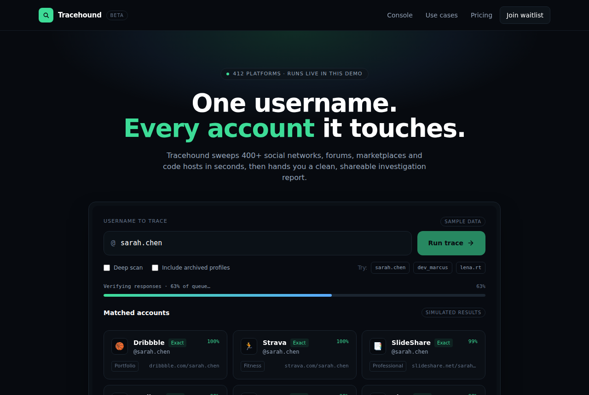

Sherlock: username lookup across 400+ social networks
sherlock-project/sherlock · SecurityMIT⭐ 112,843

What it is. Sherlock is a Python CLI from the sherlock-project that takes one or more usernames and checks them against 400+ social networks, writing the hits to a text file (JSON, CSV and XLSX output are also supported per the README). Install with pipx install sherlock-project or the official Docker image.
Why it's taking off. It is a clean, MIT-licensed tool that solves a concrete problem in a few seconds, and the demo is self-explanatory: one command in, a list of live profiles out. The project has ~112k stars and adds roughly 1,500 a day right now, which is unusual for a security CLI. That growth looks driven by the OSINT and trust-and-safety crowd on X and YouTube, where "look up a handle everywhere" is an easy thing to show on screen.
Where the product opportunity is. Not in re-selling the CLI. The plausible paid layer is workflow, not lookup: scheduled monitoring of a watchlist, diffing new accounts between runs, PDF/CSV case reports, and team seats for due-diligence and brand-protection teams who will not install Python. The pricing anchor is the existing commercial OSINT tools (Maltego, Pipl) on the high end, so $29–99/month sits well below them — but only if the product saves analyst time, not just answers one query.
Treat the compliance side as a first-class feature, not a footnote: platform ToS, GDPR/PDPA and California privacy law all apply to automated lookups of other people's accounts.
Today's top 5
| # | Repo | Buzz | Startup | Overall |
|---|---|---|---|---|
| 1 | sherlock-project/sherlock | 8.33 | 6.55 | 7.68 |
| 2 | RoutineMiku/apkstart | 8.33 | 6.15 | 7.23 |
| 3 | n4ze3m/tiny-voca | 7.33 | 6.25 | 7.2 |
| 4 | Noniv/abyssal-garden | 8.67 | 6.0 | 6.77 |
| 5 | heydamir/unslop | 8.0 | 6.2 | 6.72 |